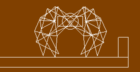

physics_draw_debug()
Retours: N / A
Lors de la création d'un système physique dans GameMaker Studio 2, il est souvent important d'avoir une représentation visuelle de ce qui se passe réellement avec une instance. Cela peut être réalisé en utilisant physics_draw_debug, qui trace un schéma des propriétés physiques associées à l'instance exécutant le code. Voici une image de l'apparence:

Il convient de noter que pour que cela fonctionne, il doit être dans l'événement de dessin de l'instance, et il sera dessiné en utilisant la couleur de dessin actuellement définie.
draw_set_colour(c_red);
physics_draw_debug();
Le code ci-dessus va dessiner une représentation des propriétés physiques associées à cette instance en utilisant la couleur rouge.